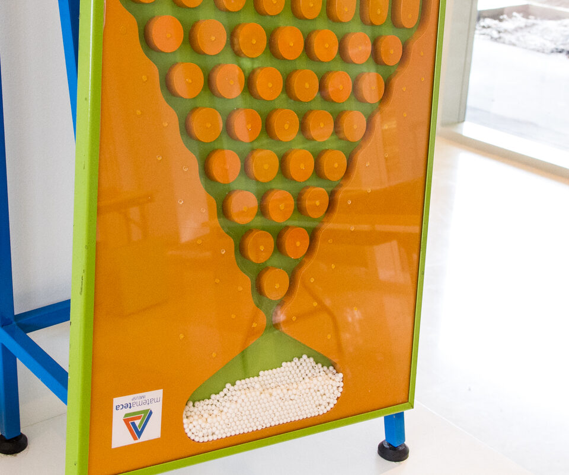

গণিত · সম্ভাবনা
দানা পড়ে এলোমেলো, তবু মাঝখানে ভিড় কেন?


ভাবুন, একটি দানা ওপর থেকে পড়ছে। প্রতিটি সারিতে একটি পেরেকের ধাক্কায় সেটি বাঁয়ে বা ডানে যায়। আদর্শ মডেলে ধরে নিই, দুই দিকের সম্ভাবনা সমান এবং আগের ধাক্কা পরেরটির দিক নির্ধারণ করে না।
মাত্র দুই সারি দিয়ে শুরু করা যাক। সম্ভাব্য পথ চারটি—বাঁ-বাঁ, বাঁ-ডান, ডান-বাঁ আর ডান-ডান। মাঝের ঘরে পৌঁছানোর পথ দুটি। দুই প্রান্তে পৌঁছানোর পথ একটি করে। ফলে মাঝের ঘরের সম্ভাবনা অর্ধেক, আর দুই প্রান্তের প্রতিটির এক-চতুর্থাংশ।
চার সারিতে পথ হয় ১৬টি। একেবারে বাঁ দিক থেকে ঘরগুলোর জন্য পথের সংখ্যা যথাক্রমে ১, ৪, ৬, ৪, ১। মাঝের ঘরের জন্য দরকার দুবার ডান আর দুবার বাঁ। কোন দুবার ডান হবে, তা বেছে নেওয়ার উপায় ছয়টি।
অনেক দানা ফেললে এই অনুপাতের কাছাকাছি ফল পাওয়ার কথা। একটি নির্দিষ্ট দানার গন্তব্য অনিশ্চিত হলেও দল হিসেবে তাদের বণ্টন নিয়ে তাই পূর্বাভাস দেওয়া যায়। বাস্তব বোর্ডে ঘর্ষণ বা সামান্য হেলান ফল বদলে দিতে পারে। মডেলটি যাচাইয়ের সহজ উপায় হলো ঘর ধরে দানা গুনে প্রত্যাশিত অনুপাতের সঙ্গে মিলিয়ে দেখা।